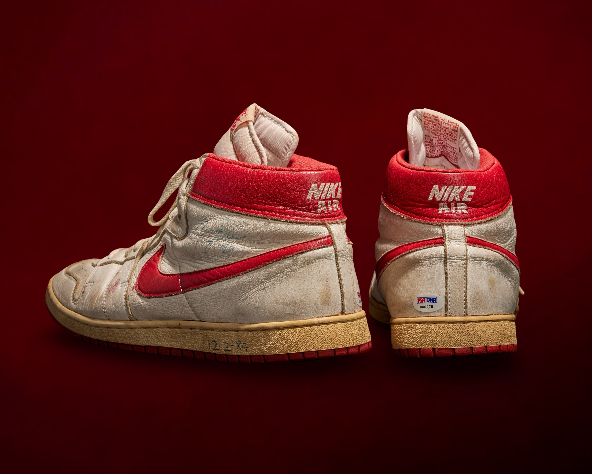

Nike Air Ship
Verification Summary
| Method | Count | Public | Status |
|---|---|---|---|
| Photo Matched | 1 | 1 | √ |
| Coding Verified | 0 | 0 | ⏳ |
| Observed Use | Multiple | — | ⏳ |
Unlike jerseys, footwear is documented by model, use, and method of verification rather than population accounting.
MODEL OVERVIEW

Documented Nike Air Ship example associated with Michael Jordan’s earliest professional footwear use.
Research Notes
Footwear identification within the archive extends beyond visual comparison. Analysis considers model chronology, material behavior, production characteristics, and player-specific wear patterns observed across game imagery and surviving examples.
Methodology & Identification
Footwear identification within the archive extends beyond direct visual comparison. Analysis incorporates model chronology, production coding, material behavior, and player-specific wear patterns observed across game imagery and surviving examples.
Particular attention is given to structural deformation during use, including creasing patterns, lace tension habits, and outsole or midsole stress responses resulting from Jordan’s movement and play style.
Final identification is determined through the convergence of these characteristics rather than any single matching detail.
Nike Air Ship

Photo-matched Nike Air Ship example attributed to 11-29-4 vs. Phoenix.
Public Sale
Research & Provenance
- Associated with the opening portion of the 1984–85 rookie season.
- Precedes Michael Jordan’s transition into the Air Jordan 1.
- Classification supported through visual comparison and model chronology.